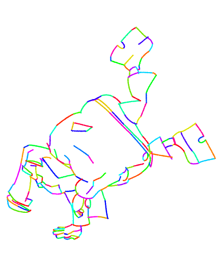
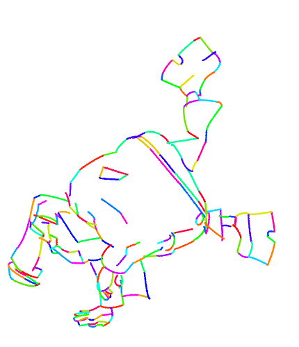

Joint Stroke Tracing and Correspondence for 2D Animation
Sun Yat-sen University
Framework Overview
Our framework takes as inputs consecutive raster frames, denoted as reference and target, along with a vector drawing of the reference containing several stroke chains (i.e., long curves), each of which comprises connected strokes.
It performs a joint stroke tracing and correspondence task by generating corresponding vector strokes one by one (a).
It consists of two models: one for matching starting point of each stroke chain (b), the other for predicting parameters of the associated strokes (c).
The whole process works in a local view based on patches cropped by windows.
A proposed plug-and-play adaptive spatial transformation module (ASTM) is integrated into the two models to handle large motions or stroke distortion.
Overall Introduction
(Or watch on Bilibili)
👇
Clean Line Drawings
Rough Sketches
 |
 |
|  |  |
More results of rough sketches
(Or watch on Bilibili)
👇
Comparisons of inbetweening results
(Or watch on Bilibili)
👇
@article{mo2024joint,
title={Joint Stroke Tracing and Correspondence for 2D Animation},
author={Mo, Haoran and Gao, Chengying and Wang, Ruomei},
journal={ACM Transactions on Graphics},
year={2024},
publisher={ACM New York, NY}
}